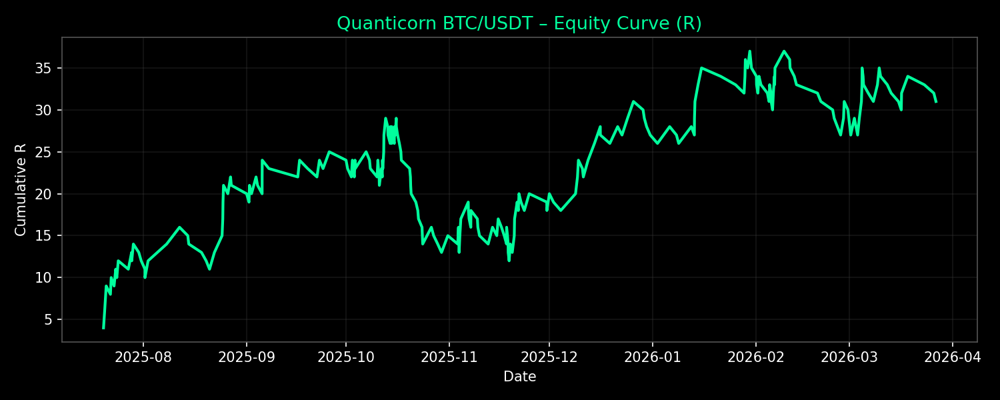

BTC/USDT Telegram Signals
Low-frequency, high R-multiple BTC/USDT trading signals delivered directly to your Telegram. Designed for serious traders seeking structured entries, precise risk management, and consistent performance.
Our proprietary algorithm identifies high-probability setups with a target of ~2R per trade. Every signal includes clear entry zones, stop-loss levels, and multiple take-profit targets.
Total Trades (All-Time): 209
Cumulative R (All-Time): +28.0R
Win Rate (All-Time): 37.3%
Recent ~30 Days (25 trades): +14.0, 52.0% Win Rate
Bot Started: Jul 20, 2025 • Last trade: Feb 25, 2026
Follow updates on X: @realquanticorn
Trading cryptocurrencies involves substantial risk and is not suitable for all investors. Past performance is not indicative of future results. This service provides educational signals and is not financial advice. You could lose all or more of your initial investment. Only risk capital you can afford to lose.
By subscribing, you acknowledge that you understand these risks and are solely responsible for your trading decisions.